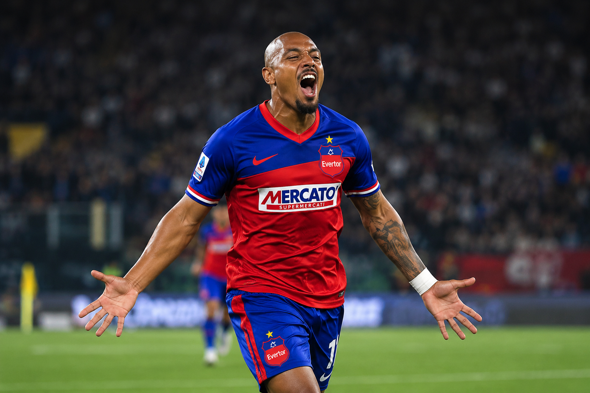

Malen è il migliore in assoluto: l’Evertor domina la giornata e risale in campionato, chiudendo le qualificazioni con un travolgente 5–1.

GIRONE A · INTERTOR, SORPASSO AL TRAGUARDO
L’Intertor batte la Dinamo Siena 3–1 e chiude al primo posto con 13 punti, davanti ai senesi (12). Entrambe accedono all’Extra League. L’Evertor travolge il Lobe United 5–1: un finale brillante prima della nuova avventura in Lefabam Cup, dove ritroverà proprio il Lobe.
GIRONE B · SPARTAK PADRONE
Lo Spartak Pisa supera la Zuluzebra 3–1 e chiude a quota 13. I Wild Eagles, già qualificati, cedono 3–2 al Castel di Iemma. Per Castel e Zulu si apre ora il capitolo Lefabam Cup.
GIRONE C · VAIENTUS, MISSIONE COMPIUTA
La Vaientus supera il Tomcat 4–2 e conquista l’ultimo posto disponibile nell’Extra League. Il Taurinorum batte il Monaco 2–0, ma il successo non basta: Monaco e Vaientus passano, Taurinorum e Tomcat proseguono in Lefabam Cup.